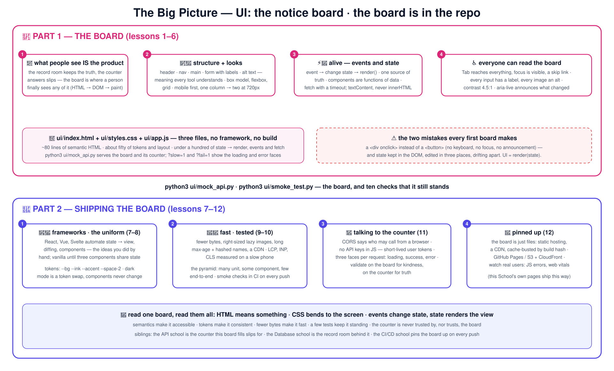

📌 शाळेच्या पद्धतीने UI शिका
लोक प्रत्यक्षात काय पाहतात, ते शाळेच्या सूचना फलका च्या रूपात शिकवलेले: रचना, दिसणे, आणि कोणी स्पर्श केल्यावर काय घडते. प्रत्येक धडा म्हणजे क्रमांकित आकृती असलेली शाळेची गोष्ट — आणि फलक रेपोच्या आतच आहे: तीन साध्या फाइल्समधले खरे web ॲप (HTML, CSS, JavaScript — framework नाही, build पायरी नाही) आणि बोलण्यासाठी एक छोटे काउंटर, जे प्रत्येक धडा वाचतो, मोडतो आणि सुधारतो.
🧱 HTML 🎨 CSS ⚡ JavaScript 🧠 state ♿ a11y 🎽 tokens 🚀 performance 🧪 testing
🧱 भाग 1 — फलक (1–6) लोक जे पाहतात तेच उत्पादन 📌 अर्थ असलेली रचना, वाकणारा layout 🧱🎨 फलक जिवंत होतो: events, fetch ⚡ सत्याचा एकच स्रोत; प्रत्येकजण वाचू शकतो 🧠♿ 🚚 भाग 2 — पाठवणे (7–12) frameworks, आणि साधे JavaScript कधी पुरते 🧰 गणवेश: tokens आणि dark mode 🎽 वेगवान, तपासलेला, काउंटरशी सुरक्षित संवाद 🚀🧪📨 भिंतीवर लावलेला: build, deploy, निरीक्षण 🚚 # the 60-second wow — a real web app, live:
git clone https://github.com/BaluRaut/learn-ui-school.git && cd learn-ui-school
python3 ui/mock_api.py # serves the board + its tiny counter on http://127.0.0.1:8000
python3 ui/smoke_test.py # does the board stand? 10 checks (second terminal)तुम्हाला काय दिसायला हवे (छाटलेले — यश असे दिसते):
✅ lang attribute on <html>
✅ one <h1>
✅ every input has a label
✅ images have alt
✅ skip link + live region
✅ design tokens defined
✅ dark theme via tokens
✅ focus is visible
✅ API returns students
✅ API rejects a bad form (400)
🎉 the board stands🎒
धडा 01 आधी: तुम्हाला
ब्राउझर आणि Python 3 लागतो (फक्त फलक ज्याच्याशी बोलतो त्या छोट्या काउंटरसाठी) — Node नाही, npm नाही, framework नाही. चांगले शेजारी:
API शाळा (हा फलक ज्यासाठी चिठ्ठ्या भरतो ते काउंटर) आणि
CI/CD शाळा (फलक भिंतीवर कसा लागतो).
हे काय नाही: React चा कोर्स — धडे 04–05 मध्ये हाताने केल्यानंतर frameworks काय automate करतात ते धडा 07 दाखवतो.
🗺️ संपूर्ण चित्र — एक आकृती, पूर्ण कोर्स
संपूर्ण कोर्स एका कॅनव्हासवर. 4K आवृत्तीसाठी क्लिक करा.

🧱 भाग 1 — फलक (धडे 1–6)
एक git ब्रँच = एक कल्पना; ब्रँच 04 मध्ये धडे 01–04 आहेत. लॅबसाठी ब्राउझर आणि Python 3 लागतो (छोट्या काउंटरसाठी).
1
📌 UI का सूचना फलक — लोक जे पाहतात तेच उत्पादन; ब्राउझर, DOM, एक HTML फाइल. lesson-01-why-uiधडा वाचा → आकृती पहा ↗ 2
🧱 HTML ची रचना फलकाचा सांगाडा — semantic elements, forms, labels, alt मजकूर. lesson-02-html-structureधडा वाचा → आकृती पहा ↗ 3
🎨 CSS layout फलकाची मांडणी — box model, flexbox, grid; एकच फलक फोनवर आणि भिंतीवर. lesson-03-css-layoutधडा वाचा → आकृती पहा ↗ 4
⚡ JavaScript & events फलक जिवंत होतो — events, DOM बदल, काउंटरकडे fetch. lesson-04-javascript-eventsधडा वाचा → आकृती पहा ↗ 5
🧠 State & components सत्याचा एकच स्रोत — state → render, data चे functions म्हणून components. lesson-05-state-componentsधडा वाचा → आकृती पहा ↗ 6
♿ सुलभता (Accessibility) प्रत्येकजण फलक वाचू शकतो — keyboard, labels, contrast, focus, ARIA, screen readers. lesson-06-accessibilityधडा वाचा → आकृती पहा ↗
🚚 भाग 2 — फलक पाठवणे (धडे 7–12)
production front end ला लागणारे सगळे, प्रत्येक गोष्ट त्याच छोट्या सूचना फलकावर दाखवलेली.
7
🧰 Frameworks एका धड्यात React, Vue, Svelte — ते काय automate करतात, साधे JavaScript कधी पुरते. lesson-07-frameworksधडा वाचा → आकृती पहा ↗ 8
🎽 Design systems & tokens शाळेचा गणवेश — एका token पत्रकातून रंग, अंतर, अक्षरे आणि dark mode. lesson-08-design-tokensधडा वाचा → आकृती पहा ↗ 9
🚀 कामगिरी (Performance) फलक पटकन उघडतो — bundles, lazy प्रतिमा, caching, Core Web Vitals. lesson-09-performanceधडा वाचा → आकृती पहा ↗ 10
🧪 UI ची चाचणी फलक अजून उभा आहे का? — unit, component, end-to-end, visual, आणि smoke test. lesson-10-testingधडा वाचा → आकृती पहा ↗ 11
📨 Backends शी बोलणे काउंटरच्या चिठ्ठ्या भरणे — CORS, ब्राउझरमधले tokens, loading आणि error स्थिती, XSS. lesson-11-talking-to-backendsधडा वाचा → आकृती पहा ↗ 12
🚚 Build, deploy & निरीक्षण फलक भिंतीवर लावणे — static hosting, CDN, cache busting, निरीक्षण; कळस-प्रकल्प. lesson-12-build-deploy-observeधडा वाचा → आकृती पहा ↗
🗣️ मोठ्याने समजावा — धडा 12 नंतर: (1) <div onclick> पेक्षा <button> का बरा — फुकट मिळणाऱ्या तीन गोष्टी सांगा? (2) पान तुमच्या लॅपटॉपवर चालते आणि फोनवर मोडते — कोणत्या दोन CSS सवयी हे टाळतात? (3) "UI = render(state)": तुम्ही DOM हातानेही बदलले तर काय बिघडते? (4) screen reader वापरणारा विद्यार्थी नोंदवू शकत नाही — तुम्ही काय तपासाल, क्रमाने? (5) फलकाने आधीच तपासलेले काउंटरने पुन्हा का तपासावे? (6) hash केलेली फाइलनावे आणि मोठा max-age यांचा एकमेकांशी काय संबंध?
📐 धड्यांच्या आकृत्या — क्रमांक अनुसरा
प्रत्येक धडा एका क्रमांकित बॉक्स-आणि-बाण आकृतीत — स्वतंत्र पानावरही .
1 📌 UI कासूचना फलक — लोक जे पाहतात तेच उत्पादन; ब्राउझर, DOM, एक HTML फाइल.
🗄️📨 खोली आणि काउंटर Database शाळा सत्य सांभाळते; API शाळा चिठ्ठ्यांना उत्तर देते — आणि अजून कोणीच काहीच पाहिलेले नाही = दर्शनी भाग नसलेले परिपूर्ण मागचे ऑफिस 1 📌 सूचना फलक — UI 1 HTML: काय लावले आहे (रचना, अर्थ) 2 CSS: ते कसे दिसते (मांडणी, गणवेश) 3 JS: कोणी स्पर्श केल्यावर काय घडते 2 ब्राउझर मजकुराचे झाड (DOM) बनवतो आणि रंगवतो — लोक जे पाहतात तेच उत्पादन 👀 3
2 🧱 HTML ची रचनाफलकाचा सांगाडा — semantic elements, forms, labels, alt मजकूर.
🧱 खुणा (landmarks) header · nav · main · section · footer — फलकाचा सांगाडा 1 📝 अर्थ असलेले forms label for= · required · minlength · select/option · button type=submit 2 🖼️ alt, lang, title प्रत्येक img ला alt · html lang= · एकच h1 · शीर्षके क्रमाने 3 🧠 semantics = ब्राउझर, search engines आणि screen readers सर्वांना समजणारा अर्थ <button> फुकटात clickable, focusable, keyboard वर चालणारा असतो; <div onclick> यापैकी काहीच नाही · <li> चा <ul> 'यादी, 5 गोष्टी' असा वाचला जातो ui/index.html: 80 ओळी, प्रत्येक element त्याच्या अर्थासाठी निवडलेला — शैली नंतर 4
3 🎨 CSS layoutफलकाची मांडणी — box model, flexbox, grid; एकच फलक फोनवर आणि भिंतीवर.
📦 box model content · padding · border · margin box-sizing: border-box, नेहमी 1 ↔️ flexbox — एका ओळीतल्या गोष्टी display:flex · gap · align-items · margin-left:auto nav उजवीकडे ढकलतो 2 ▦ grid — भागांचे पान grid-template-columns: 2fr 1fr · auto-fill, minmax(200px, 1fr) 3 📱🖥️ एक फलक, प्रत्येक आकार — responsive आधी मोबाइल: एक स्तंभ; @media (min-width: 720px) → दोन स्तंभ · सापेक्ष एकके (rem, %, fr) · पानावर max-width · प्रतिमांना max-width:100% · फोनपेक्षा रुंद ठरलेली रुंदी कधीच नको — ui/styles.css, ~60 ओळी, हीच संपूर्ण मांडणी 4
4 ⚡ JavaScript & eventsफलक जिवंत होतो — events, DOM बदल, काउंटरकडे fetch.
👆 एक event #class-filter वर change · #enrol-form वर submit 1 🧠 handler state बदलतो state.filter = e.target.value form वर e.preventDefault() 2 🖼️ render() पुन्हा रंगवतो replaceChildren(cards) · textContent, कधीच innerHTML नाही 3 📨 fetch — फलक काउंटरची चिठ्ठी भरतो await fetch('/api/students', {signal: AbortSignal.timeout(5000)}) → r.ok? → r.json() — API शाळेचे HTTP, ब्राउझरमधून · async/await + try/finally: loading → झाले किंवा error, आणि UI प्रत्येक स्थिती दाखवते (धडा 11) 4
5 🧠 State & componentsसत्याचा एकच स्रोत — state → render, data चे functions म्हणून components.
🧠 सत्याचा एकच स्रोत state = {students, filter, loading, error} — बाकी काहीच नाही 1 🧩 components StudentCard(s) → element · शुद्ध: तोच data, तोच DOM 2 🔁 UI = render(state) state बदला → render() बोलवा · DOM कधीच हाताने बदलू नका 3 🎯 प्रत्येक framework जी कल्पना automate करते React, Vue, Svelte: components + state → view, diffing engine सह म्हणजे render() स्वस्त · ui/app.js हे 100 ओळींत हाताने करते — एकदा वाचा आणि frameworks ची जादू संपते (धडा 07) 4
6 ♿ सुलभताप्रत्येकजण फलक वाचू शकतो — keyboard, labels, contrast, focus, ARIA, screen readers.
⌨️ keyboard Tab सगळीकडे पोहोचतो · आधी skip link · :focus-visible दिसतो 1 🏷️ नावे प्रत्येक input ला label for= · प्रतिमांना alt · मजकूर नसेल तिथे aria-label 2 🎨 contrast + हालचाल 4.5:1 मजकूर · फक्त रंग नाही · reduced-motion पाळलेले 3 📣 live regions role=status / aria-live=polite: फलक बदल जाहीर करतो 4 ♿ सुलभ = प्रत्येकाला, आणि प्रत्येक साधनाला वापरता येणारे screen readers, फक्त-keyboard वापरणारे, voice control, search engines आणि तुमच्या स्वतःच्या चाचण्या — सगळे तेच semantics वाचतात; a11y हा थर नाही, ते नीट केलेले HTML आहे ui/smoke_test.py प्रत्येक वेळी lang, एकच h1, labels, alt, skip link आणि live region तपासते
7 🧰 Frameworksएका धड्यात React, Vue, Svelte — ते काय automate करतात, साधे JavaScript कधी पुरते.
⚛️ React functions म्हणून components, JSX, hooks (useState) — सर्वात मोठी परिसंस्था 1 🟢 Vue templates + reactive state, single-file components — सौम्य 2 🧡 Svelte build वेळीच compile होऊन नाहीसे होते — छोटे bundles, साधा दिसणारा कोड 3 🍦 साधे JavaScript ui/app.js जे करते — छोट्या फलकांना आणि widgets ना पुरेसे 4 🧰 प्रत्येक framework काय automate करते: state → view, diffing, events, components, routing benchmark नव्हे, टीम आणि परिसंस्थेनुसार निवडा · तिसरा component state वाटून घेईपर्यंत साधे JavaScript · कोणत्याही एका framework च्या API आधी कल्पना शिका (धडे 04–05) React मधला सूचना फलक म्हणजे तोच state object, तोच StudentCard, आणि render() फुकट
8 🎽 Design systems & tokensशाळेचा गणवेश — एका token पत्रकातून रंग, अंतर, अक्षरे आणि dark mode.
🎽 tokens --bg --ink --accent --space-2 --radius — नावे दिलेली, जादुई आकडे नाहीत 1 🌙 dark mode = tokens ची अदलाबदल prefers-color-scheme + data-theme — components कधीच बदलत नाहीत 2 📚 design system tokens + components + नियम · एक गणवेश, प्रत्येक पान 3 🎨 सुसंगती हेच एक वैशिष्ट्य अंतराची श्रेणी (6/12/20) · अक्षरांची श्रेणी · एकदाच contrast तपासलेला रंगपट · radius, सावल्या, हालचाल — एकदाच ठरवलेले, सगळीकडे वापरलेले · ui/styles.css: --accent बदला आणि अख्खा फलक बदलतो; हीच संपूर्ण कल्पना 4
9 🚀 कामगिरीफलक पटकन उघडतो — bundles, lazy प्रतिमा, caching, Core Web Vitals.
⚖️ वजन कमी bytes: minify, bundle, tree-shake, compress (gzip/br) 1 🖼️ प्रतिमा योग्य आकार, आधुनिक formats (webp/avif), loading=lazy, width/height दिलेले 2 🧊 caching मोठा max-age + hash केलेली फाइलनावे · वाचणाऱ्याजवळ CDN 3 📏 Core Web Vitals — माणसासाठी 'वेगवान' म्हणजे काय LCP: सर्वात मोठी गोष्ट लवकर रंगते · INP: स्पर्शाला पटकन प्रतिसाद · CLS: काहीच उड्या मारत नाही · DevTools / Lighthouse मध्ये मोजा, हळू फोनवर, लॅपटॉपवर नव्हे · सूचना फलक 3 फाइल्स पाठवतो, framework नाही, inline SVG अवतार — लोड करायला थोडेच असल्याने त्याचे गुण चांगले 4
10 🧪 UI ची चाचणीफलक अजून उभा आहे का? — unit, component, end-to-end, visual, आणि smoke test.
🔬 unit शुद्ध functions: StudentCard(s) योग्य मजकूर देते 1 🧩 component चाचणी data ने एक तुकडा render करा; DOM तपासा (Testing Library) 2 🧭 end-to-end खरा ब्राउझर form भरतो (Playwright) — थोडे, हळू, अनमोल 3 📸 visual screenshot ची तुलना कोणालाही नको असलेला CSS बदल पकडते 4 🧪 पिरॅमिड: भरपूर unit, काही component, थोडे end-to-end ui/smoke_test.py ही शून्य-dependency आवृत्ती: lang, h1, labels, alt, tokens, focus, API — 30 ओळींत 10 तपासण्या, CI मध्ये (CI/CD शाळा) · ui/tests/board.spec.js तोच हेतू Playwright मध्ये दाखवते: getByRole, getByLabel — वापरकर्ते जे पाहतात ते तपासा, class ची नावे नव्हे
11 📨 Backends शी बोलणेकाउंटरच्या चिठ्ठ्या भरणे — CORS, ब्राउझरमधले tokens, loading आणि error स्थिती, XSS.
🚧 CORS कोणत्या origins ना ब्राउझरमधून कॉल करता येईल ते काउंटर सांगते: Access-Control-Allow-Origin 1 🪪 ब्राउझरमधले tokens JS मध्ये API keys नकोत · अल्पायुषी user tokens · sessions साठी httpOnly cookies 2 🛡️ XSS textContent, कधीच innerHTML नाही data सह · CSP header 3 ⏳ प्रत्येक विनंतीला तीन चेहरे: loading · यश · error aria-busy + 'Loading…' · यादी · पुन्हा प्रयत्नासह 'Could not load: 503' — mock API वरचे ?slow=1 आणि ?fail=1 प्रत्येक चेहरा दाखवतात · फलकावर तपासा ते सौजन्यासाठी, काउंटरवर तपासा ते सत्यासाठी (API शाळेचा problems सह 400) 4
12 🚚 Build, deploy & निरीक्षणफलक भिंतीवर लावणे — static hosting, CDN, cache busting, निरीक्षण; कळस-प्रकल्प.
🏗️ build bundle + फाइलनावांना hash · (फलकाला याची गरज नाही — 3 फाइल्स) 1 🚚 static deploy GitHub Pages / S3 + CloudFront / कोणतेही CDN — फलक म्हणजे नुसत्या फाइल्स 2 👀 निरीक्षण खऱ्या वापरकर्त्यांकडून JS errors + web vitals · प्रत्येक कॉलला request id 3 🧭 संपूर्ण प्रवास: HTML → CSS → JS → state → a11y → tokens → वेगवान → तपासलेला → काउंटरशी बोलतो → भिंतीवर लागला हीच साइट (द स्कूलचे प्रत्येक पान) नेमकी अशीच deploy होते: static फाइल्स, GitHub Pages, commit नुसार cache-busted — CI/CD शाळेचा मेलरूम ती पोहोचवतो · कळस-प्रकल्प: फलकावर गृहपाठाची यादी जोडा — स्वतःचे state, component, a11y तपासणी, smoke तपासण्या आणि deploy सह 4
धडा 01 सुरू करा →
🗓️ अभ्यास योजना (4 आठवडे)
📐 सर्व 12 धड्यांच्या आकृत्या
🧪 प्रश्नमंजुषा (15 प्रश्न)
⏮️ आधी काय होते & फायदे-तोटे
{kind=link}